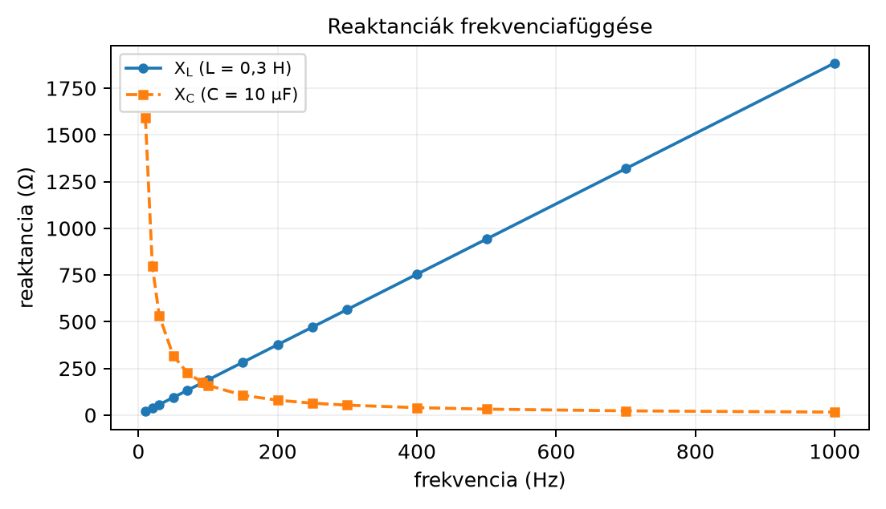

A karbantartó műhelyben azt látod, hogy egy mágneskapcsoló tekercsét
egyenfeszültségről mérve a kéziszered szerint 470 Ω
ellenállású. Az oktató egy próbapanelen, védett kivitelben sorba köt
vele egy izzót, és 230 V váltakozó feszültségre kapcsolja;
te csak megfigyeled. (Ezt a kísérletet te a gyakorlati útmutató szerint
24 V-on végezd el.) Az izzó alig világít, a mágneskapcsoló
pedig gyengén zümmög. Az Ohm-törvény alapján ez meglepő:
470 Ω-on 230 V hatására közel
0,5 A áramnak kellene folynia, ami bőven elég lenne az
izzóhoz. Miért viselkedik mégis másként a tekercs? Az a helyzet, hogy a
tekercs nemcsak ohmos ellenállással, hanem váltakozó áramú
ellenállással is rendelkezik, ami 50 Hz-en sokkal
nagyobb lehet, mint az egyenáramú ellenállás. Ezt a jelenséget kell
pontosan megismerned ahhoz, hogy a váltakozó áramú áramköröket –
világítási vezérléseket, motorfűtéseket, tápellátásokat – megértsd és
méretezni tudd.
Az első kapcsolásban egy ellenállás, a másodikban egy tekercs, a harmadikban egy kondenzátor kap feszültséget ugyanarról a váltakozó áramú forrásról. A fázisviszonyok összehasonlításához egy-egy kis körben megmérjük az áramot és a feszültséget.
A három áramkör abban tér el egymástól, hogy az áram mikor éri el a maximumát a feszültséghez képest. A jelenséget a legjobban fázorábrával lehet követni:

Fent a feszültség vektora felfelé mutat. Az ellenállás árama fázisban van a feszültséggel, ezért ugyanabba az irányba mutat. Mivel a fázorok az óramutatóval ellentétesen forognak, a késő mennyiség az óramutató járásának irányában marad le. Az induktivitás árama 90°-ot késik, ezért a feszültséghez képest jobbra (vízszintesen) mutat. A kapacitás árama 90°-ot siet, ezért balra mutat. Mindhárom áramfázor az origóból indul, és az , merőleges -ra.
Ha az ellenállásra szinuszos feszültséget kapcsolunk, az Ohm-törvény minden pillanatban érvényes:
Definíció. Az ohmos (hatásos) ellenállás olyan fogyasztó, amelyben a feszültség és az áram pillanatértéke minden időpillanatban egyenesen arányos, ezért a két mennyiség fázisban van egymással, a fázisszög . Az ohmos ellenálláson a váltakozó áramú teljesítmény hővé alakul.
Összefüggés. Az effektív értékekre is érvényes:
A reaktancia itt nulla, a feszültség és az áram vektora azonos irányba mutat. A gyakorlatban a fűtőszál, az izzószál, a termosztát beépített ellenállása, valamint a vezeték saját ohmos ellenállása ilyen jellegű. A tekercs és a kondenzátor ideális esetben nem ohmos fogyasztó, ezért viselkedésük eltér ettől.
Számítás. Egy hősugárzó fűtőszála
26,0 Ω-os. Hálózati feszültségen, 230 V-on
számítsuk ki az áramot.
Adott:
Keresett:
Képlet:
Behelyettesítve:
Ellenőrzés:
,
ami egy hősugárzó jellemző teljesítménye. ∎
A tekercsben az áram folyásakor mágneses tér épül fel. Ha az áram változik, a mágneses fluxus is változik, és a tekercsben önindukciós feszültség ébred, amely a változás ellen hat (Lenz-törvény). Váltakozó áramnál az áram folyamatosan változik, ezért a tekercs folyamatosan „ellenáll” a változásnak. Ez az ellenállás nem hőt termel, hanem mágneses térben tárolt energiát cserél a hálózattal.
Definíció. Az induktív reaktancia () a tekercs váltakozó áramú, frekvenciafüggő ellenállása, amelynek egysége az ohm:
Ahol az induktivitás (henry, H), a frekvencia (Hz), a körfrekvencia (rad/s).
Összefüggés. Az effektív értékekre:
A fáziseltérés induktív jellegű: az áram 90°-ot késik a feszültséghez képest (). A fizikai ok az, hogy a tekercs árama csak akkor tud növekedni, ha a feszültség már megelőzte. Először megjelenik a feszültség, és csak utána épül fel az áram. A hétköznapi szerelői emlékeztető: C I L: C-nél az I (áram) előre siet, L-nél az I (áram) hátra marad.
Gyakorlati megfigyelés. Ha a mágneskapcsoló
tekercsére 230 V váltakozó feszültséget kapcsolunk, a
tekercs impedanciája jóval nagyobb, mint az egyenáramú ellenállása. Ez
az oka, hogy az előző izzós kísérletben az izzó alig világított. Az izzó
elé kötött tekercs sorba kapcsolt
ellenállásként viselkedik, korlátozza az áramot.
Számítás. Egy szemléltető, nagy induktivitású
mágneskapcsoló-tekercs induktivitása 20 H. Számítsuk ki az
-t
50 Hz-en és az áramfelvételt, ha a tekercs ideálisnak
tekinthető és 230 V-ra kapcsoljuk.
Adott:
Keresett:
,
Képlet:
Behelyettesítve:
Az áram:
Ez , a kis és közepes váltakozó áramú mágneskapcsolók tartási teljesítményének nagyságrendje; a behúzási áram ennek többszöröse, és a tekercs impedanciája nyitott és behúzott armatúránál erősen eltér (légrés). (ellenőrizendő: gyártói adatlap) ∎
A kondenzátor két, egymástól szigetelővel elválasztott vezető lemez. Egyenáramú körben a feltöltődés után nem folyik át rajta áram. Váltakozó feszültségen viszont folyamatosan hol az egyik, hol a másik irányba töltődik, és a töltőáram a csatlakozó vezetékekben folyik. A kondenzátor tehát váltakozó áramban vezet, de a vezetés mértéke a töltés-váltakozás sebességétől, vagyis a frekvenciától függ.
Definíció. A kapacitív reaktancia () a kondenzátor váltakozó áramú, frekvenciafüggő ellenállása, amelynek egysége az ohm:
Ahol a kapacitás (farad, F), a frekvencia (Hz).
Összefüggés. Az effektív értékekre:
A fáziseltérés kapacitív jellegű: az áram 90°-ot siet a feszültséghez képest (). Ennek oka, hogy előbb megindul a töltőáram, és csak ahogy a lemezek töltése felépül, növekszik a feszültség. Ezért a kondenzátornál az áram „előre szalad”.
Számítás. Egy fénycsővilágítási körben
4,7 µF-os fázisjavító kondenzátort 230 V-os,
50 Hz-es hálózatra kapcsolnak. Számítsuk ki a kapacitív
reaktanciát és a felvett áramot.
Adott:
Keresett:
,
Képlet:
Behelyettesítve:
Az áram:
Figyelem. A kondenzátor valóságos veszteségekkel is rendelkezik, és a hálózatról leválasztva életveszélyes töltést tárolhat. A kisméretű kondenzátort is kisütés (kisütő ellenállás, lekapcsolás) után szabad csak megfogni. ∎
Az és képlete jól mutatja a frekvenciafüggést. A tekercsnél minél nagyobb a frekvencia, annál gyorsabban változik az áram, annál nagyobb az önindukciós feszültség, tehát annál nagyobb a reaktancia. A kondenzátornál minél nagyobb a frekvencia, annál gyorsabban váltakozik a töltés, annál nagyobb a töltőáram, tehát annál kisebb a reaktancia.
Összefüggés. Az egyenesen arányos, az fordítottan arányos a frekvenciával.
A gyakorlatban ez az oka annak, hogy a tekercs és a kondenzátor
másként viselkedik a különböző felharmonikusokon. Egy kapcsolóüzemű
tápegység bemeneti szűrőjében a nagyfrekvenciás zavarokat
induktivitásokkal fojtják le, míg a nagyfrekvenciás jeleket
kondenzátorokkal vezetik el a föld felé. Ugyanaz az elem
50 Hz-en egészen más.
Számítás. Hasonlítsuk össze egy 0,3 H-s
tekercs és egy 10 µF-os kondenzátor reaktanciáját
50 Hz-en és 1 kHz-en.
A tekercsnél :
A kondenzátornál :
Látható, hogy a tekercs nagyfrekvencián szinte elzárja az utat, a kondenzátor pedig nagyfrekvencián szinte zárlatot jelent. ∎
Az alábbi ábra ugyanezt az összefüggést szemlélteti a frekvencia függvényében.

Az
görbe a frekvenciával egyenesen arányosan nő, az
görbe fordítottan arányosan csökken. A két görbe kb.
92 Hz-en metszi egymást
();
ez a soros LC-kör rezonanciafrekvenciája, lásd Impedancia, soros és párhuzamos RLC, rezonancia.
Ennél kisebb frekvencián a kondenzátor, nagyobbon a tekercs reaktanciája
nagyobb; 50 Hz-en
,
.
A táblázatba foglalt összefoglalás a szerelői munka során gyakran előforduló jelenségeket segít gyorsan felismerni.
| Elem | Reaktancia | Fázisszög | Áram a feszültséghez képest | Egyenáramon |
|---|---|---|---|---|
| fázisban | Ohm-törvény | |||
| késik | rövidzár (ideális tekercsben) | |||
| siet | szakadás (ideális kondenzátor) |
A táblázatban az fázisszöge azért pozitív, mert a feszültség előzi meg az áramot. A fázisszöge azért negatív, mert ott az áram előzi meg a feszültséget. A három elem együttes viselkedésével, az eredő impedanciával a következő alfejezetben foglalkozunk.
A három elem reaktanciáját és fázisviszonyát a következő alfejezet, az Impedancia, soros és párhuzamos RLC, rezonancia fogja összeépíteni. Ott az ellenállás, a tekercs és a kondenzátor soros és párhuzamos kapcsolásait vizsgáljuk, és kiszámítjuk az eredő váltakozó áramú ellenállást.
Továbbvitt eredmény. Egy ellenálláson a feszültség és az áram fázisban van. Egy induktivitáson az áram 90°-ot késik, . Egy kapacitáson az áram 90°-ot siet, . Az és frekvenciafüggő, ezért a váltakozó áramú áramkörök viselkedése nem számolható egyszerű egyenáramú ellenállásokkal.
Egy régi, induktív előtéttel (fojtótekerccsel) szerelt fénycső nem
világított. A szerelő kicserélte a fénycsövet és a gyújtót, de a lámpa
továbbra sem működött. A kismegszakító nem oldott le, tehát zárlat nem
volt. A multiméterrel megmérte a fojtótekercs egyenáramú ellenállását:
84 Ω-ot mutatott, ami elsőre jónak tűnt. A hibakeresés
közben azonban kiderült, hogy a fojtótekercs menetzárlatos: egy része
átütött, és bár az ohmos ellenállás alig változott, az induktivitása
drasztikusan lecsökkent. Váltakozó feszültségen a reaktanciája alacsony
lett, a fénycső nem kapott megfelelő előtétet. A tanulság: a tekercs
váltakozó áramú viselkedését nem az egyenáramú ellenállás, hanem az
és az
határozza meg. A hibás tekercset induktivitásmérővel vagy cserepróbával
lehet megbízhatóan ellenőrizni.
Cél. Tanműhelyben, törpefeszültségű (jellemzően
24 V-os tanulói) környezetben mutasd meg, hogy a tekercs és
a kondenzátor váltakozó áramon korlátozza az áramot, és hogy ez a hatás
egyenáramon nem érvényesül.
Eszközök és anyagok. Törpefeszültségű váltakozó
áramú forrás (pl. 24 V, 50 Hz), egyenáramú
tápegység, 24 V-os jelzőlámpa, néhány 10–50 Ω,
1 W ellenállás, egy legalább 0,5 H-s tekercs,
egy 10–47 µF-os, legalább 63 V AC névleges
feszültségű fólia- (MKP) vagy bipoláris (motorindító) kondenzátor,
multiméter. Polarizált elektrolitkondenzátor váltakozó áramú próbára nem
használható.
Biztonsági korlát. A feladat tanműhelyi, törpefeszültségű környezetre vonatkozik; hálózati feszültségen önállóan ne végezd. A kondenzátor törpefeszültségen is tárolhat energiát, ezért a forrásról való lekapcsolás után süsd ki ellenálláson keresztül.
Lépések: 1. Kapcsold le a forrást, tartsd be a feszültségmentesítés öt biztonsági szabályát. 2. Állítsd össze az áramkört: feszültségforrás + jelzőlámpa + tekercs, sorba kötve. Először egyenáramú tápegységről tápláld. Figyeld meg, hogy a lámpa erősen világít-e. 3. Kapcsold le, végezz feszültségmentesítést, majd ugyanazt az áramkört kösd a váltakozó feszültségű forrásra. Figyeld meg, hogy a lámpa gyengébben világít-e, vagy esetleg alig észrevehetően. 4. Ismét lekapcsolás után cseréld ki a tekercset a kondenzátorra, és végezd el mind az egyen-, mind a váltakozó áramú próbát. 5. Multiméterrel mérd meg a forrás feszültségét, a lámpa kapocsfeszültségét és az áramkörben folyó áramot. Számold ki az egyes elemeken mért reaktanciát.
Ellenőrzés. A váltakozó áramú mérésnél a tekercs sorba kötve csökkenti a lámpa fényerejét, mert jelentkezik. Egyenáramnál a lámpa fényesebb. A kondenzátoros áramkörben egyenáramnál a lámpa nem világít (a kondenzátor feltöltődött), váltakozó áramnál viszont világít, mert a kondenzátor átengedi a váltakozó áramot.
Tipikus hibák. Tilos polarizált elektrolitkondenzátort váltakozó feszültségre kötni: felmelegszik, kiszáradhat és szétrobbanhat; védőszemüveg kötelező. Az átkötést csak feszültségmentes állapotban végezd; mérni a bekapcsolt, törpefeszültségű körön, megfelelő mérési állásban és a mérővezetékek megfelelő mérési kategóriájával szabad. A lámpa várható árama a választott kondenzátorral: -on, -nál , .
10 Ω ohmos és
20 Ω induktív reaktanciával rendelkezik, a váltakozó áramú
eredő nem 30 Ω, hanem az impedancia a
.
Ezt a hibát az Impedancia, soros és párhuzamos RLC,
rezonancia alfejezetben kerülhetjük el.50 Hz-en egy 4,7 µF-os kondenzátor még több
száz ohmos. A kapacitás értékét mindig számold át faradba, mielőtt
behelyettesíted az
képletbe.0,1 H-s tekercs reaktanciáját
50 Hz-en és 500 Hz-en.230 V-os hálózatra
közvetlenül, sorosan kapcsolnak egy 10 µF-os kondenzátort
és egy 1,0 H-s fojtótekercset, hogy megemeljék a
feszültséget. Számold ki a rezonanciafrekvenciát, és indokold, miért
veszélyes.50 Hz-en rezonanciába kerülhet, ami a két
elemen a hálózati feszültség többszörösét is létrehozhatja. Ezért ilyen
kapcsolást csak kifejezetten erre méretezve, védőelemekkel szabad
építeni.Egy tisztán induktív tekercsre 24 V, 50 Hz
váltakozó feszültséget kapcsolunk. Az áram 0,3 A. Határozza
meg a tekercs reaktanciáját és induktivitását.
Egy kondenzátor 10 µF kapacitású. Számítsa ki a
kapacitív reaktanciáját 50 Hz-en és
1 kHz-en.
Egy tekercs 0,5 H induktivitású és 12 Ω
ohmos ellenállású. 230 V, 50 Hz hálózatra
kapcsolva mekkora lesz az áram, ha a tekercs impedanciáját
képlettel számítjuk? (Ez a következő alfejezetben tanult impedancia
alkalmazása.)
Egy váltakozó áramú körben sorba van kötve egy 20 Ω-os
ellenállás és egy 0,02 H-s ideális tekercs. Rajzolja be a
fázorábrát, és határozza meg a fázisszöget, ha az áramot vesszük
referencia-irányba. (Csak a fázorok elrendezését kell ábrázolni, a
pontos impedanciaszámítást az Impedancia, soros és
párhuzamos RLC, rezonancia alfejezetben végezzük el.)
Egy frekvenciaváltó kimenetén a feszültség alapfrekvenciája
50 Hz, de a nagy kapcsolási frekvenciájú jelben
10 kHz-es összetevő is van. A szűrő
induktivitása sorosan a frekvenciaváltó kimenete és a terhelés között, a
kondenzátora a kimeneten párhuzamosan (keresztirányban) van; a terhelés
hatását hagyd figyelmen kívül. Egy
-s
szűrőinduktivitás és egy
-os
szűrőkondenzátor esetén hasonlítsd össze, mennyivel más a két elem
reaktanciája 50 Hz-en és 10 kHz-en. Miért jó
ez a szűrő számára?
Egy világítási áramkörben a kompakt fénycsövek gyakran tönkremennek. A szerelő azt gyanítja, hogy a hálózatban nagyfrekvenciás zavarok vannak. A legegyszerűbb mérési módszerrel, multiméterrel mit tud ellenőrizni, és hogyan igazolhatja a hiba valódi okát? Mire kell ügyelnie a fénycső tápegységének megbontása előtt?
Adott:
Keresett:
,
Képlet:
és
Behelyettesítve:
Ellenőrzés:
tipikus fojtótekercs érték. ∎
Adott:
Keresett:
Képlet:
Behelyettesítve:
Ellenőrzés: nagyobb frekvencián kisebb reaktancia, ami megfelel az
elméletnek. ∎
Adott:
Keresett:
Képlet:
és
Behelyettesítve:
Ellenőrzés: a tekercs reaktanciája sokkal nagyobb, mint az ohmos
ellenállása, ezért az impedanciát döntően az
határozza meg. Ha az ohmos ellenállást elhanyagoltuk volna,
lett volna, a különbség elhanyagolható. ∎
Az áram referencia-irányba (vízszintesen jobbra) mutat. Az ellenálláson eső feszültség fázisban van az árammal, tehát ugyanabba az irányba mutat. A tekercsen eső feszültség 90°-ot siet az áramhoz képest, tehát függőlegesen felfelé mutat. Az eredő feszültség az ellenállás és a tekercs feszültségének vektorösszege.

Az ábrán a feszültség és az áram közötti fázisszög az és az vektorok által bezárt szög. Az és vektorokból . Adatokkal: , ; az áram -kal késik a feszültséghez képest. ∎
Adott:
Keresett:
és
mindkét frekvencián, a rezonanciafrekvencia és az osztó átvitele
Terheletlen LC-osztó:
(a reaktanciák előjelével)
.
Képlet:
Behelyettesítve
-en:
(elhanyagolható)
;
az osztó átvitele
,
az alapharmonikus akadálytalanul átmegy.
Behelyettesítve
-en:
Rezonanciafrekvencia: . A -es összetevőre , azaz : kb. -szoros csillapítás.
Következtetés. A soros induktivitás a nagyfrekvenciás összetevőt fojtja ( -en), a keresztirányú kondenzátor pedig a maradékot levezeti. A szűrő akkor hatékony, ha a rezonanciafrekvenciája () jóval az alapfrekvencia felett, de jóval a zavaró frekvencia alatt van. (Figyelem: és esetén lenne, és a még a rezonancia alatt van, ott a szűrő nem csillapít, hanem kb. -szörösre erősít.) ∎
Hibakeresési vázlat. A hálózati zavarok gyakran a nemlineáris fogyasztóktól (például kapcsolóüzemű tápegységek) származnak. Multiméterrel csak a feszültség effektív értéke és (ha a műszer tudja) a frekvencia mérhető: ez a szinuszostól eltérő, nagyfrekvenciás zavart nem mutatja ki, legfeljebb az effektív érték eltérését a vártól. A nagyfrekvenciás zavar valódi okát oszcilloszkóppal vagy hálózatminőség-elemzővel kell igazolni (lásd Oszcilloszkóp és jelalakok). A beépített elektronikát (a kompakt fénycső tápegységét) nem javítjuk, hanem a fénycsövet cseréljük. Biztonság: a kompakt fénycső tápegységének szűrőkondenzátora a hálózati csúcsfeszültségre (kb. 325 V) töltődik, ezért megbontás előtt az öt szabály szerint feszültségmentesíteni (lekapcsolás, visszakapcsolás elleni biztosítás, feszültségmentesség ellenőrzése kétpólusú vizsgálóval, szükség szerint földelés és rövidre zárás, szomszédos részek lefedése) és a kondenzátort ellenálláson át ki kell sütni. Feszültség alatt a készüléket megbontani tilos.
Az ideális ellenállás váltakozó áramú körben ohmos viselkedést mutat, a feszültség és az áram fázisban van egymással, . A tekercsben az önindukció miatt az áram 90°-ot késik a feszültséghez képest, és a reaktanciája . A kondenzátorban az áram 90°-ot siet a feszültséghez képest, és a reaktanciája . Az a frekvenciával egyenesen arányos, az fordítottan arányos. A gyakorlati szerelésben ezért a tekercs nagyfrekvencián fojt, a kondenzátor nagyfrekvencián átenged. A továbbvitt eredmények: a reaktancia és a fáziseltérés fogalmát a soros és párhuzamos RLC-körök, az impedancia és a rezonancia tárgyalásánál használjuk fel az Impedancia, soros és párhuzamos RLC, rezonancia alfejezetben. Az ottani számítások alapját ezek az és képletek, valamint a 90°-os fázistolások alkotják.